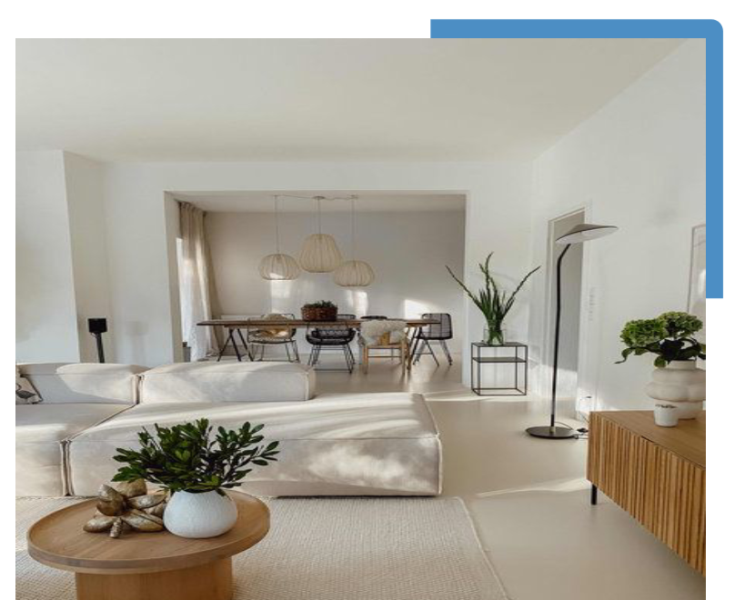

Rénovation de longère : notre passage en revue des 6 points clés
Le charme des maisons normandes et longères bretonnes à rénover
La longère, dont le développement se fait dans la longueur (d’où son nom), offre de belles perspectives en termes de volumes.
Procéder à une rénovation de longère, c’est se donner la chance de vivre dans un logement plein de charme et d’histoire, et adapté aux besoins de notre époque.
Pour valoriser les atouts des pierres et poutres apparentes tout en apportant un confort actuel à votre bâtisse ancienne, vous pouvez compter sur l’expertise de nos professionnels Camif Habitat. Ils vous conseillent également sur la question essentielle : par où commencer ?
Pour réussir votre réhabilitation de longère, il y a de bons réflexes à connaître. Nous vous les dévoilons ici
Certains sont empreints de bon sens, d’autres demandent de l’expertise.
Nous vous conseillons de vous entourer de professionnels expérimentés (architecte ou maître d’œuvre), ayant une certaine expérience des projets de rénovation sur un bâtiment ancien (comme la rénovation de ferme ou la rénovation de grange).
1. Définir Précisément le Périmètre de Votre Rénovation de Longère
Bien penser son plan de rénovation de longère, c’est avant tout prendre en compte les spécificités de ce type d’habitat, qu’on reconnaît à son étroit bâti.
Pour rénover une longère, il est conseillé de mener une réflexion autour de la disposition des différents espaces de vie.
Dans le même principe, l’emplacement de l’escalier sera à définir en toute intelligence si vous souhaitez agrandir votre longère en hauteur dans le cadre de la rénovation ou si vous : l’escalier doit permettre de desservir les pièces maîtresses de la longère, sans pour autant empiéter massivement sur les pièces de vie.
Il existe également des longères bretonnes qui disposent d’un escalier extérieur pour accéder à la partie située sous le toit.
Ces escaliers ont beaucoup de charme et devront rester, mais ils ne sont pas pratiques, surtout par temps de pluie. Réfléchissez à leur utilité par rapport à leur praticité !
En bref, la distribution des volumes de votre longère doit être bien pensée afin de donner du rythme à l’ensemble.

2. Longère Bretonne, Normande, Fermette : Des Qualités Architecturales à Conserver
Toiture ou structure, murs ou parquets, l’idée est de retaper la bâtisse, qu’elle soit une maison normande ou simplement une ferme ancienne, en conservant les parties architecturales traditionnelles en bon état.
Par exemple, la charpente ou les poutres apparentes en bois sont précieuses, car elles donneront un cachet indéniable à la future propriété. Il en va de même pour un plancher en bois massif, un sol en tomettes ou des tuiles anciennes en guise de couverture.
L’assistance d’un architecte sera alors utile pour en faire la bonne analyse et donc les bons choix qui en découlent.
N’oubliez pas la façade et l’extérieur de la longère ! Son charme commence avant l’entrée. Si la façade présente des signes d’usure ou de saleté, un nettoyage en profondeur peut faire une grande différence.
Vous pouvez éliminer les taches, les dépôts de saleté ou les moisissures. Si nécessaire, envisagez également une restauration pour réparer les parties endommagées.
Pensez aussi à apporter une nouvelle couche de peinture à la place de l’ancien enduit, souvent peu attractif.
Choisissez des couleurs qui se marient bien avec l’environnement, dans les tons clairs. Si la façade est en mauvais état, il faudra recourir à un ravalement, qui s’appliquera aussi aux entourages des fenêtres et éléments décoratifs éventuels.
Ensuite, faites appliquer un enduit protecteur, ou même un isolant extérieur. Le vent ne passera plus !
3. Créer des Ouvertures et Gagner en Luminosité
Les longères ont du charme, mais manquent de luminosité, aux vues de nos critères actuels. Le risque avec un projet de rénovation d’une maison ancienne, c’est de refaire l’intérieur de sa maison mais de ne pas en être pleinement satisfait, car les entrées de lumière ont été négligées.
Une longère possède effectivement des murs très épais qui, si les ouvertures sont trop peu nombreuses, ou bien trop étroites, empêchent la lumière de pénétrer. En revanche, elles peuvent être un bon début pour un isolant efficace…
Le mur aveugle est également l’une des spécificités de la longère. Parfois, les règles de mitoyenneté vous contraindront à laisser intact le mur sans ouvertures. Il faudra donc compenser avec de grands apports lumineux en partie avant de la bâtisse, ou effectuer des percements dans le toit.
La question des ouvertures doit donc se poser dès le début. Bien souvent, le questionnement va porter sur la création d’une large baie vitrée pour le salon, et d’ouvertures supplémentaires sur le toit pour gagner encore de la lumière naturelle en intérieur, notamment dans les chambres.
Les règles d’urbanisme n’excluent pas une attention particulière à l’entrée de la maison, qui doit protéger la longère du froid tout en facilitant l’accès. On privilégiera une entrée avec une porte massive plutôt que vitrée, pour assurer un maximum de sécurité et de défense du froid.
4. Comment Aménager une Longère ? Délimiter Vos Nouveaux Espaces à Vivre
Afin de transformer la longère en un logement fonctionnel correspondant à vos habitudes de vie, il est utile de créer des espaces identifiables qui seront délimités par un changement de niveau ou par une cloison ou encore un élément décoratif comme une bibliothèque ou un rangement.
Il faut penser aussi à la circulation dans les espaces et savoir jouer entre cloisons pleines ou vitrées. Ces dernières sont à manipuler avec pertinence, car elles sont souvent la clé de la réussite d’un bon agencement. Par exemple, vous pouvez miser sur une large pièce à vivre comme pièce principale.
Passons de pièce en pièce :
La cuisine de la longère
Dans cet espace tout en longueur, la cuisine de la longère devra certainement être rénovée. Pourquoi ne pas faire un grand espace, avec l’escalier d’un côté et la cuisine de la longère rénovée de l’autre ?
Elle pourra ainsi profiter de tout l’espace, sans obliger les cuisiniers et cuisinières de se tenir à l’écart de la famille ou des invités. N’hésitez pas à mettre les éléments anciens en valeur, comme un évier en pierre, des niches ou d’autres éléments de décoration. Un buffet pourra permettre de petit-déjeuner ou de prendre l’apéro sans couper l’espace à la vue des convives.
L’escalier de la longère
Les longères ne possédaient en général qu’un rez-de-chaussée, l’espace sous le toit étant réservé au stockage du foin. Cet ensemble est pourtant idéal pour créer des chambres, sachant qu’il faut créer un escalier pour desservir l’ensemble. Le plan de la longère va devoir intégrer cet accès, idéalement au milieu de la longueur pour assurer une distribution idéale.
Le salon de la longère
Tout en longueur, il se place idéalement du côté de la cheminée, si elle existe. Dans le cas d’une longère en pierre, les montants et niches alentour peuvent donner du charme à l’ensemble. Le salon peut gagner en luminosité avec des portes-fenêtres ou grâce à une véranda.
Côté revêtement des sols, pensez plutôt aux tomettes ou aux carreaux de ciment pour garder le style de la longère ancienne, avec en plus l’avantage de l’entretien facile. Il est possible de trouver des revêtements des sols anciens chez certains revendeurs, une option écologique et économique.
Côté murs, n’hésitez pas à profiter de la beauté des longères en pierre pour nettoyer et rénover le mur d’origine, à la fois graphique et esthétique. Pas besoin de papier peint !
Les autres espaces de vie
Les longères d’antan avaient du charme, mais rarement des salles de bain. Idéalement, vous pourrez en installer dans les combles, ou à côté d’une suite parentale au rez-de-chaussée. La production d’eau chaude sera cependant une priorité pour votre confort au quotidien.
Avez-vous pensé à recourir à l’énergie solaire ? Si votre longère est bien orientée, vers le sud de la Bretagne par exemple, la production peut soulager une bonne partie de votre facture d’électricité.
Et côté décoration de la longère, que choisir ?
Tout est possible ! Opter pour un style campagnard ou un design avant-gardiste, c’est vous qui choisissez. Il n’y a aucune obligation de choisir des meubles en bois, ou des meubles campagnards. Les murs de pierre nettoyés, les espaces simples, s’accordent avec tous les styles. La longère étant cependant souvent peu profonde, il vaut mieux éviter les meubles imposants, type armoire normande, au profit de pièces de petite taille.
5. Quel Système de Chauffage pour Votre Longère ?
Encore une fois, la longère dispose de particularités : elle se caractérise par de grands volumes, qu’il va falloir chauffer !
Le chauffage au bois a la cote grâce à sa convivialité, sa rentabilité et son efficacité dans le respect de l’environnement. Le poêle étant plus performant que la cheminée, il est vivement recommandé si vous envisagez qu’il soit le point d’ancrage majeur de votre confort thermique.
Rien ne vous empêche toutefois de conserver une ancienne cheminée pour quelques flambées en soirée, le week-end… quand l’hiver se rappelle à nous !
Envisagez cependant également un poêle à poêle à granulés, bien plus efficace au niveau du rendement calorique, et désormais, pilotable par internet pour la mise en route. De quoi arriver le soir dans un salon bien chauffé, avec un budget très raisonnable !
6. Associer Authenticité et Modernité de Votre Maison Ancienne
Et si vous profitiez de vos travaux pour mettre en valeur le charme de l’ancien, tout en vous garantissant un certain confort de vie ?
La clé d’une rénovation de longère réussie est de mêler l’architecture traditionnelle avec des matériaux plus contemporains. Pour ce faire, Camif Habitat propose d’aménager votre longère en mariant le bois et la pierre avec le métal, le ciment ou le verre…
Jouez sur la rupture, mêlez matériaux anciens (pierres, poutres apparentes…) et matériaux modernes ! Dans ce type de projet, un seul maître mot : oser ! Pour que l’équilibre soit parfait, faites appel à un architecte Camif Habitat qui saura vous accompagner dans le choix des matériaux, des aménagements pour magnifier les éléments anciens tout en gagnant en confort.
Comment Calculer le Coût d’une Rénovation d’une Longère ?
Vous devez vous en douter : il est très difficile de réaliser une estimation du coût de rénovation d’une longère sans avoir pu analyser l’existant et mesurer l’ampleur des travaux, ni même échanger sur les besoins et envies des propriétaires en termes d’agencement, de matériaux ou d’équipements.
Néanmoins, nous pouvons tout de même vous indiquer que pour un tel projet, il faudra compter entre 1 500 et 3 200 € du m2 en moyenne. Débutez par une évaluation de l’état des éléments structurels (couverture, murs extérieurs, isolation, menuiseries extérieures, chauffage) avant de vous lancer dans des devis concernant l’aménagement intérieur.
Gardez ainsi en tête que pour un projet de rénovation réussi, il faut que votre maison soit avant tout saine, étanche et bien isolée ! Une fois cela vérifié, vous pouvez songer à vous lancer dans son aménagement intérieur, selon votre goût et votre style.
Pour vous aider à obtenir un devis le plus précis possible, nous vous conseillons :
de faire une liste détaillée de tous les travaux que vous envisagez de réaliser dans la longère, y compris la rénovation de la structure, le remplacement des revêtements de sol, la rénovation de la cuisine et de la salle de bains, la révision du système électrique et de plomberie, etc.,
de faire une liste de tous les matériaux nécessaires pour chaque travail et de rechercher les prix dans les magasins de bricolage ou auprès des fournisseurs en ligne. N’oubliez pas de tenir compte des quantités nécessaires,
d’estimer le coût de la main d’oeuvre, en calculant largement, car il y a toujours des surprises, surtout dans les constructions anciennes comme les longères. Peut-être même tomberez-vous sur une cave insoupçonnée…,,
de ne pas oublier les frais annexes comme le dépôt du permis de construire, la nécessité de poser un échafaudage pour la rénovation extérieure, la location d’une benne, etc.
Pour obtenir un chiffrage plus précis, nous vous invitons vivement à nous contacter. Nous prendrons alors rendez-vous pour la visite conseils gratuite et sans engagement à votre domicile de l’un de nos professionnels.